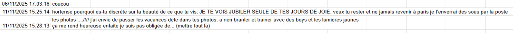
le premier mois j'ai réussi à raconter plein de choses ici😂😂
mais après... c'était trop dur... vraiment un horrible
moment...
heureusement... heureusement, ça fait
quelques semaines que je comprends... que je comprends mieux,
presque tout... on m'a sauvée... et les mondes se recollent
c'était un zoo ça devient plutôt un cirque, je sors de la
bestialité car les gens redeviennent des humains entendables, avec
des personnalités, des défauts, un homme peut devenir un peu mieux
qu'un danger et une femme devient une amie. je traduis tout ce
qu'on me dit : si on utilise "imaginate" je sais que c'est
imagine, et pas imaginate. si on me dis cachaï, c'est tu vois, pas
cachaï. mais quand l'envie m'en prend je parle français
brutalement et personne ne comprends. je peux faire des phrases
entière sans que quelqu'un réagisse et ça me glace le sang.
c'était pourtant clair, non ? le français rétablit la violence et
la vérité. je tremble je voudrais exprimer ce que ça fait
d'apparaître avec ce couteau et déchirer la toile entre les deux
mondes. eux s'ils m'insultent en me regardant dans les yeux, je
comprendrai. l'inverse, non. il me suffira de prendre une voix
douce. je n'ai envie d'insulter personne, sauf ce fils de pute qui
m'a suivi dans l'eau, film d'horreur en plein jour. j'ai crié sur
la mer j'aurai du hurler en espagnol il aurait mieux compris parce
qu'après il a encore insisté. guys je tremble ça continue je ne
reviendrai jamais, il fait trop beau. je suis redevenue très
maladroite, je fais rire les gens. je deviens l'amie de trois
femmes qui en ont peu ici, je les aime à l'infini je les admire,
et avec les autres on ne fait que des choses bien. j'apprends à
tatouer et à faire des bijoux, je reviendrai un jour en france
avec des métiers qui me plaisent plus que celui qui se dessinait
moche au fond. et je continuerai d'apprendre à parler.
l'espagnol est plus direct. à la place de "ce n'est pas vrai", il
suffira de dire mentira
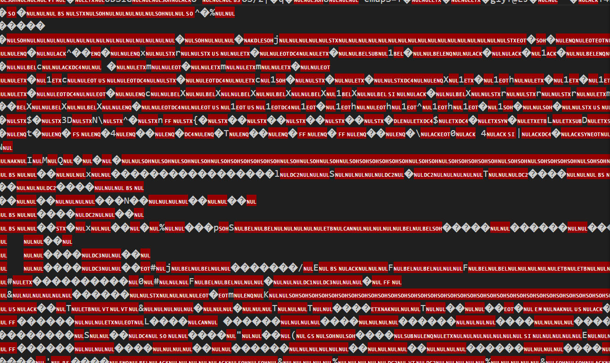
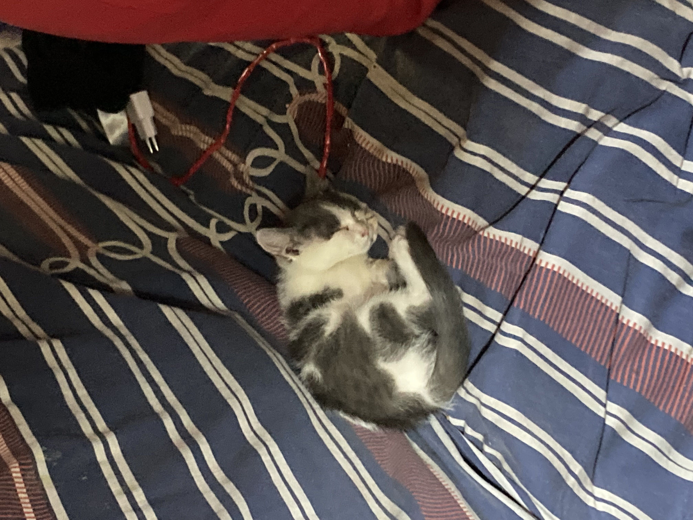
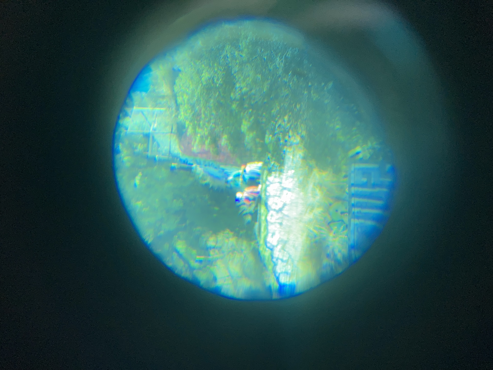
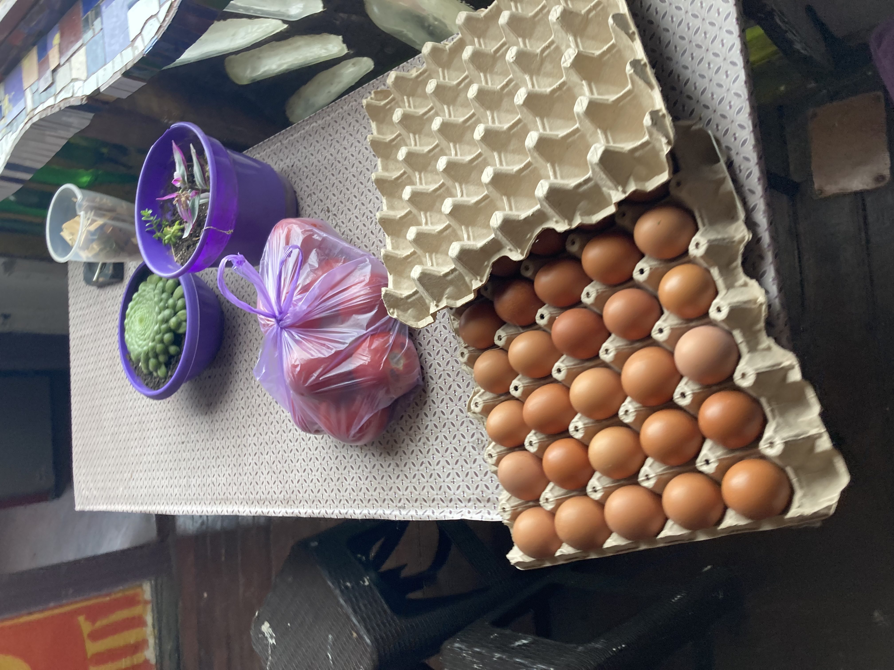
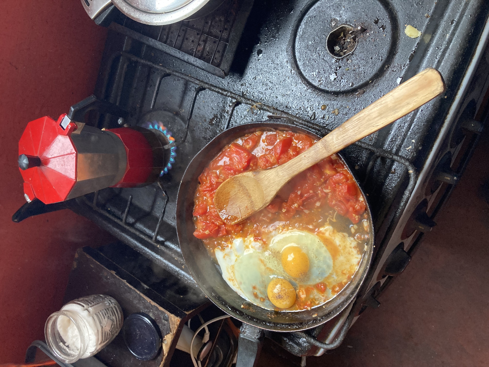
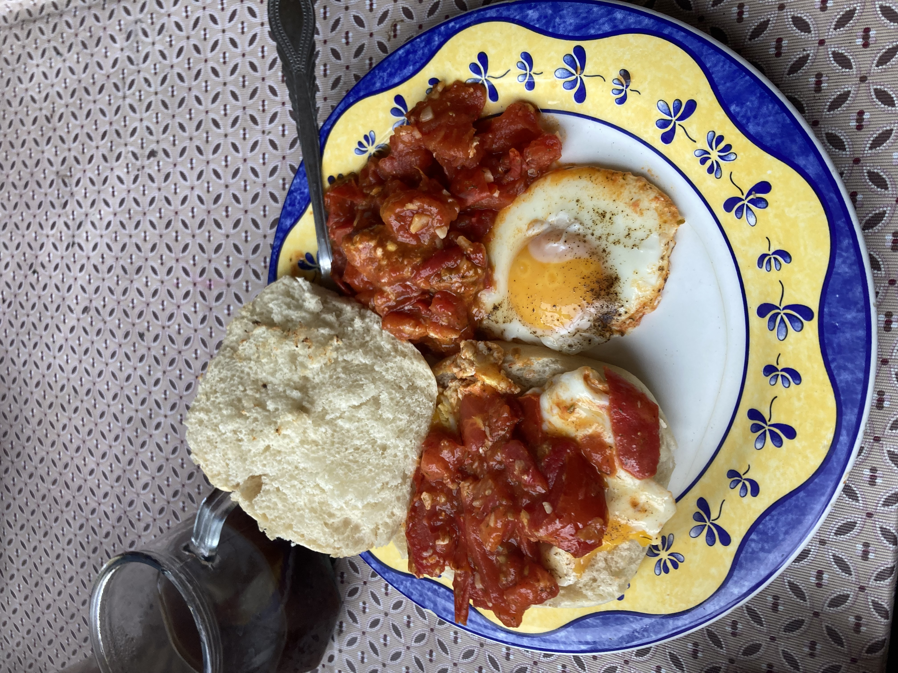

dès que je l'ai vue elle m'a dit "mati m'a quittée !"
il y a
24h ils discutaient de comment changer le monde ???
il se passe trop de choses pour en raconter. la falopa c'est de la merde il fait beau un jour sur deux la musique est belle et j'ai arrêté de me sentir seule. il y a trois jours un homme s'est fait tuer dans la rue, je n'ai plus peur de la ville. manu chao a tout appris en colombie, je voudrais faire comme lui.
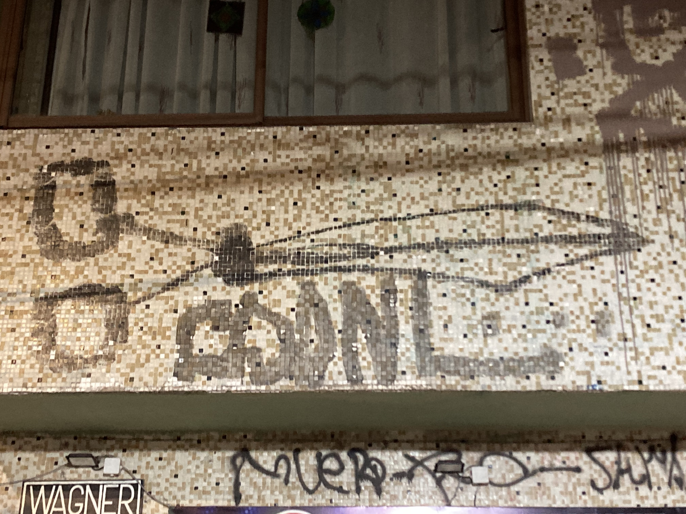
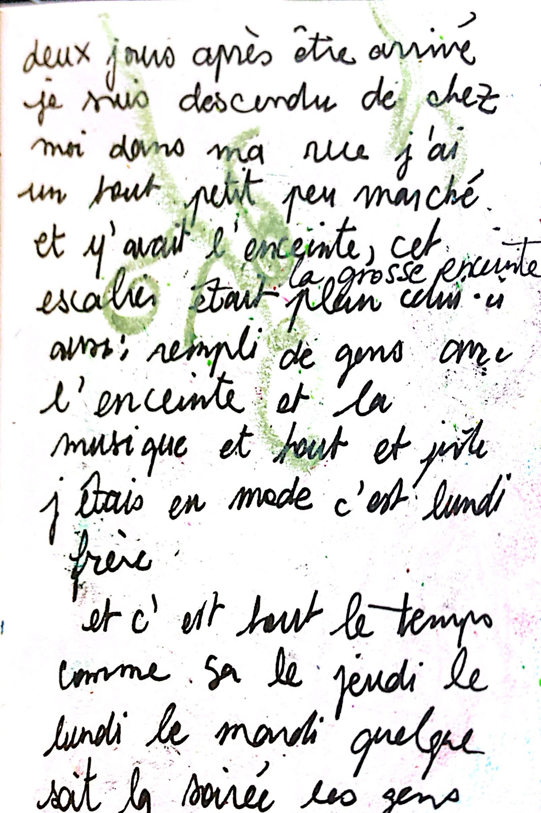
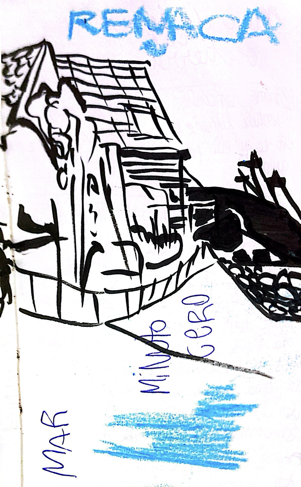
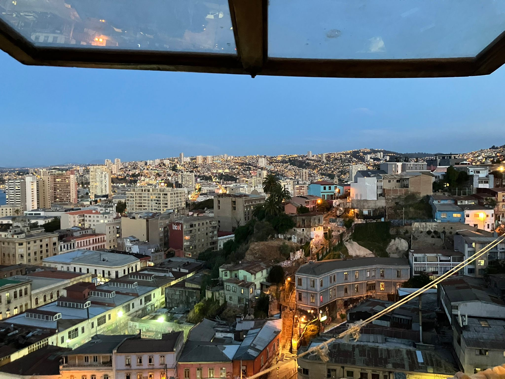